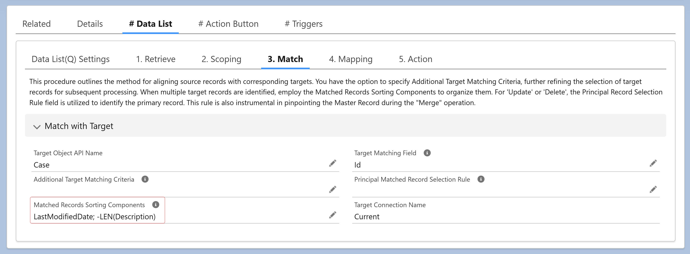

<article>
    <p>
      The <strong>"Matched Records Sorting Components"</strong> field defines the 
      <strong>sorting logic</strong> for matched target records when multiple records are found. 
      It consists of semicolon-separated expressions that <strong>compare</strong> and <strong>sort</strong>
      records in ascending order by default.
    </p>
    <br/>
    <p>
      To sort in descending order, prefix an expression with a negative sign 
      (<code>-</code>). <br />For example:<br />
      <code>-LEN(Description) ; -LastModifiedDate</code><br />
      <br />
      This sorts matched records first by <code>Description</code> length (DESC), 
      and if lengths are the same, by <code>LastModifiedDate</code> (DESC).
    </p>
    <br/>
    <p>
      For Boolean values, TRUE is considered smaller than FALSE.
    </p>
  </article>
  
          
